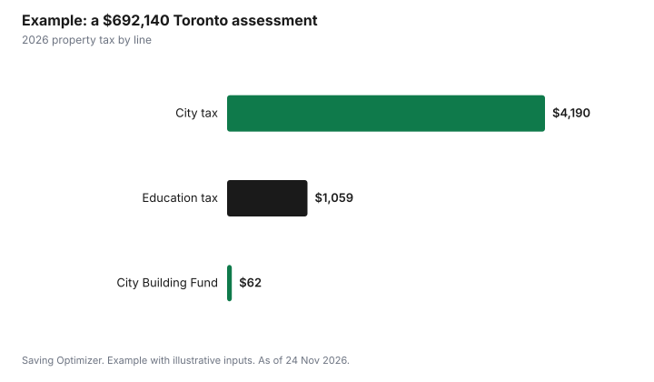

Housing · Canada
How to Read a Toronto Property Tax Bill and Spot Savings Levers

Your Toronto property tax is your MPAC assessment times the total tax rate. For 2026, the residential rate is 0.767311%, so a $692,140 home pays about $5,311. You can't negotiate the rate, but you can avoid late fees, pick a payment plan that fits your budget, ask MPAC to review your assessment, and apply for relief if you qualify.
Key takeaways
- 2026 residential rate: 0.767311% (city 0.605295%, education 0.153%, City Building Fund 0.009016%).
- Example from the city: $692,140 x 0.767311% = $5,311.
- Final 2026 instalments: 2 July, 4 August, 1 September; 11-instalment plan also available.
- Relief for low-income seniors and people with disabilities: income $62,000 or less.
- Check your assessment with MPAC; reapply for relief each year (checked 24 Nov 2026).
Line items on the bill
| Line | Rate | Set by |
|---|---|---|
| City tax | 0.605295% | City of Toronto |
| Education tax | 0.153000% | Government of Ontario |
| City Building Fund | 0.009016% | City of Toronto |
| Total | 0.767311% |
Savings levers
- Pay on time to avoid penalty and interest charges.
- Use a pre-authorized plan to spread payments.
- Check your MPAC property details for errors.
- Apply for the cancellation or deferral program if eligible.
- Condo owners: compare your assessment with similar units.

Your bill: an example
Example: on a $692,140 assessment, the city portion is about $4,190, education about $1,059 and the City Building Fund about $62, for $5,311 total.
See appealing your assessment, Ontario property tax relief and sinking funds.
Sources
- City of Toronto, Property tax rates and fees, checked 24 Nov 2026.
- City of Toronto, Property tax, water and solid waste relief, checked 24 Nov 2026.
- City of Toronto Council, 2026.CC38.1 (2026 tax rates and instalment dates), checked 24 Nov 2026.
Frequently asked questions
How is Toronto property tax calculated?
Your MPAC assessment times the total tax rate, 0.767311% for residential in 2026.
When is Toronto property tax due?
Final 2026 instalments were 2 July, 4 August and 1 September on the regular plan.
Can I pay monthly?
Yes, with the 11-instalment pre-authorized plan.
Is there property tax relief in Toronto?
Low-income seniors and people with disabilities may qualify for cancellation or deferral of increases.
Can I lower my assessment?
You can ask MPAC to review it if you think it's wrong.
Researched and drafted with AI assistance and fact-checked against official Canadian sources. How we create content.
Note: Rates change yearly. Education only.